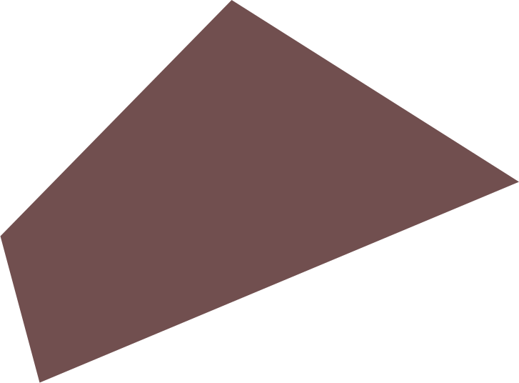
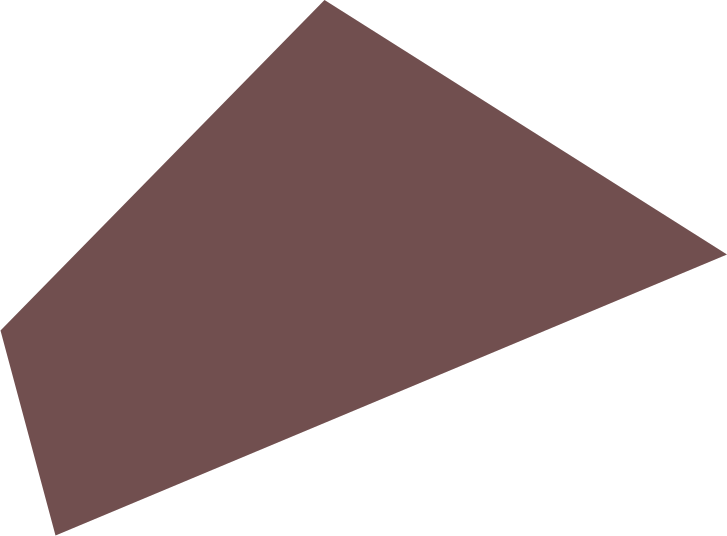

Заваривание кофе или экстракция — это процесс, при котором ароматические вещества из зерна переходят в воду. От размера помола и времени экстракции зависит вкус напитка. Чем больше площадь контакта воды с частицами кофе или чем дольше экстракция, тем больше ароматических и вкусовых веществ отдаст кофе.
Чтобы кофе получился вкусным, в напитке должно быть 20% ароматических и вкусовых веществ независимо от способа приготовления. Если напиток содержит больше 20% веществ, вкус будет неприятным. Если меньше — плоским. Чтобы измерить это количество, используют специальный прибор — рефрактометр.
 

Со временем экстракции всё просто: больше времени в воде — сильнее кофе заварится. С площадью контакта чуть сложнее. Кажется, чем крупнее помол, тем больше площадь контакта. Но на самом деле всё наоборот. Чем крупнее помол, тем меньше площадь контакта.
Когда зерно попадает в жернова кофемолки, они постепенно его растирают до нужного размера. Размер помола зависит от того, насколько близко жернова находятся друг к другу. В хороших кофемолках размер помола можно регулировать, сдвигая или раздвигая жернова.